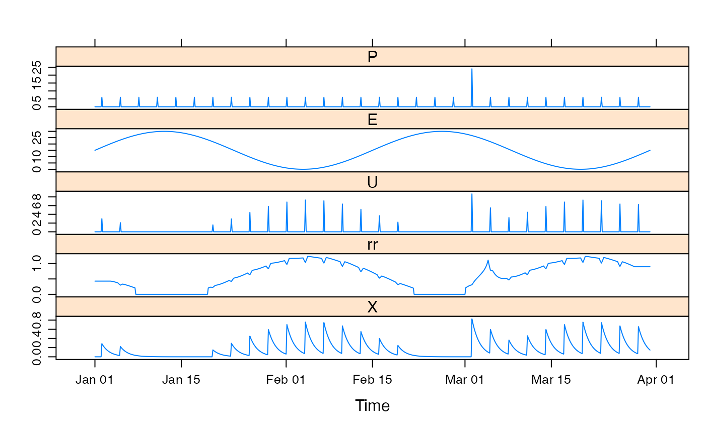
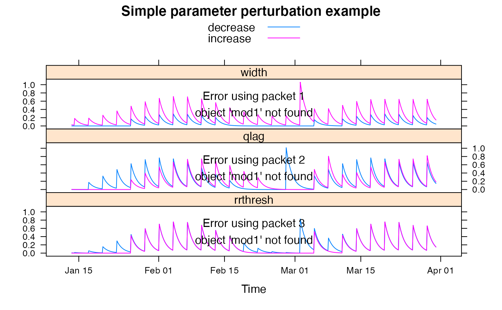

Simple time-varying runoff proportion. Rainfall is scaled by the runoff coefficient estimated in a moving window. This SMA uses streamflow data, so can not be used for prediction.
runoffratio.sim(
DATA,
width = 30,
kernel = 2,
sides = 2,
rrthresh = 0,
qlag = 0,
scale = 1,
return_state = FALSE
)time-series-like object with columns P (precipitation)
and Q (streamflow).
width of the time window (in time steps) in which to estimate the runoff coefficient.
type of window used to estimate the runoff coefficient: 1 is rectangular, 2 is triangular-weighted, 3 is Gaussian-like.
2 for time-centered estimates, 1 for estimates using data backward in time only.
a theshold value of the runoff ratio, below which there is no effective rainfall.
number of time steps to lag the streamflow (relative to rainfall) before estimating the runoff coefficient.
constant multiplier of the result, for mass balance. If this
parameter is set to NA (as it is by default) in
hydromad it will be set by mass balance calculation.
ignored.
the simulated effective rainfall, a time series of the same length as the input series.
hydromad(sma = "runoffratio") to work with models as
objects (recommended).
## view default parameter ranges:
str(hydromad.options("runoffratio"))
#> List of 1
#> $ runoffratio:List of 2
#> ..$ rrthresh: num [1:2] 0 0.2
#> ..$ scale : logi NA
data(HydroTestData)
mod0 <- hydromad(HydroTestData, sma = "runoffratio", routing = "expuh")
mod0
#>
#> Hydromad model with "runoffratio" SMA and "expuh" routing:
#> Start = 2000-01-01, End = 2000-03-31
#>
#> SMA Parameters:
#> lower upper
#> rrthresh 0 0.2
#> scale NA NA
#> Routing Parameters:
#> NULL
## simulate with some arbitrary parameter values
mod1 <- update(mod0, width = 30, rrthresh = 0.2, tau_s = 10)
## plot results with state variables
testQ <- predict(mod1, return_state = TRUE)
xyplot(cbind(HydroTestData[, 1:2], runoffratio = testQ))

## show effect of increase/decrease in each parameter
parRanges <- list(
width = c(10, 180), qlag = c(-30, 30),
rrthresh = c(0, 0.5)
)
parsims <- mapply(
val = parRanges, nm = names(parRanges),
FUN = function(val, nm) {
lopar <- min(val)
hipar <- max(val)
names(lopar) <- names(hipar) <- nm
fitted(runlist(
decrease = update(mod1, newpars = lopar),
increase = update(mod1, newpars = hipar)
))
}, SIMPLIFY = FALSE
)
xyplot.list(parsims,
superpose = TRUE, layout = c(1, NA),
main = "Simple parameter perturbation example"
) +
latticeExtra::layer(panel.lines(fitted(mod1), col = "grey", lwd = 2))
